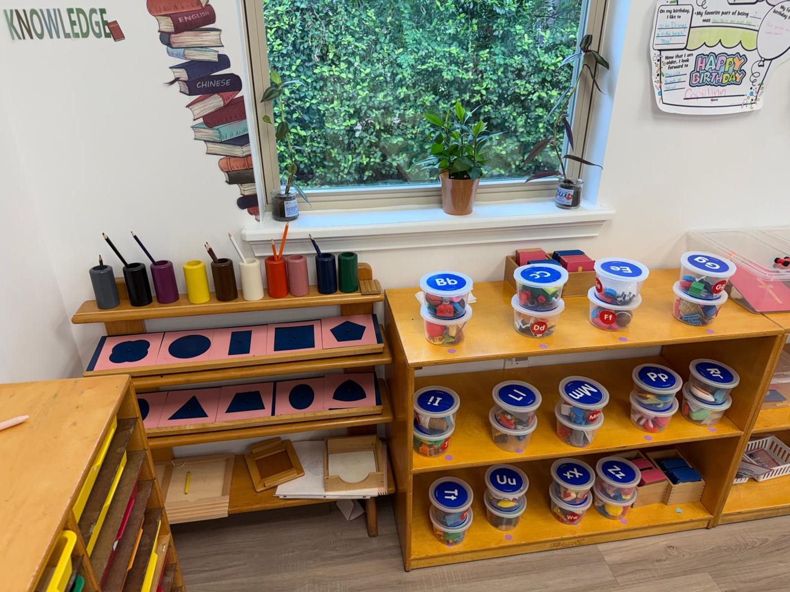
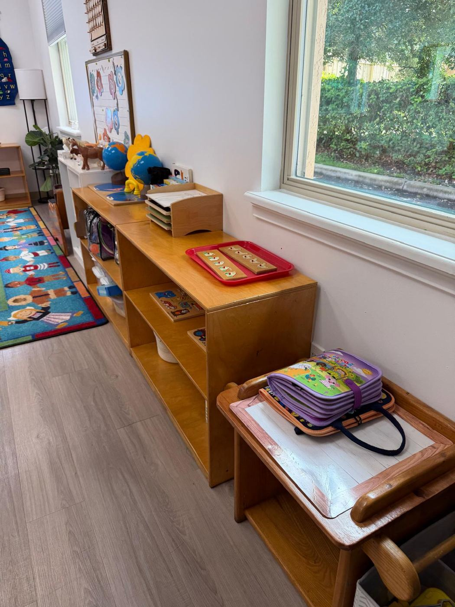
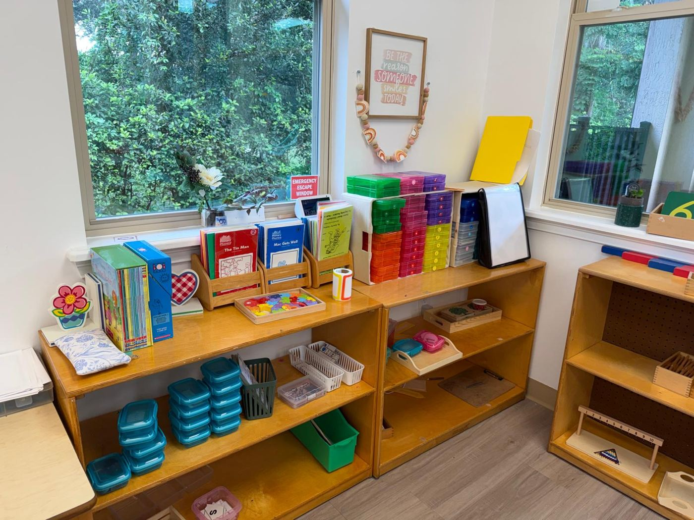
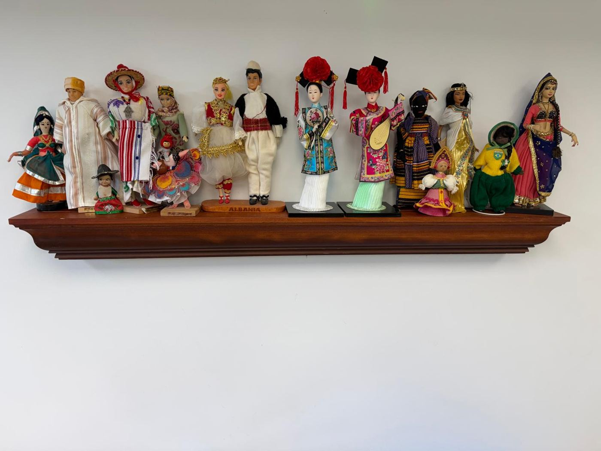
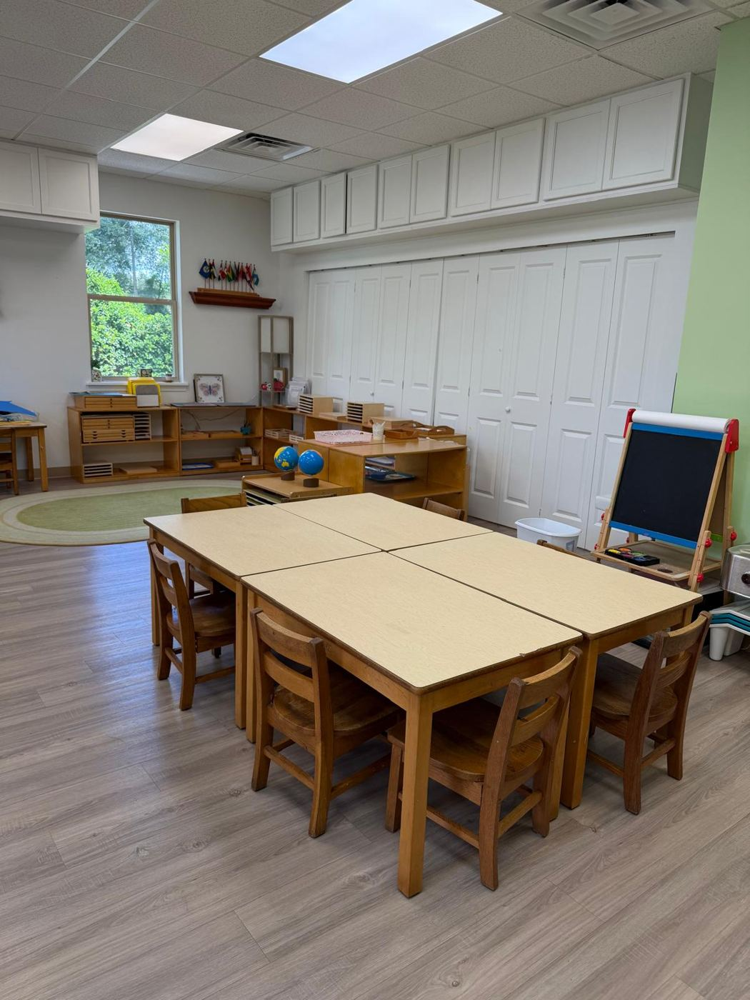

Hold it
The child handles a real quantity, a real shape or a real object and feels the idea.
The Montessori Classrooms are grouped into five general areas: Practical Life, Sensorial, Language, Math and Science. The children are able to make independent choices in areas that are of greatest interest to them.


The five areas
Each area has its own shelves in the classroom, and each material isolates one idea so children can discover it with their hands.
Practical Life exercises help the children care for themselves independently and be responsible for maintaining their environment. The exercises are the foundation of the child’s work habits.
Real tasks with real, child-sized tools build coordination, concentration and a sense of order, and they give children the satisfaction of doing something useful for themselves and their classroom.

Sensorial activities aid the child in the development of their senses and fine motor control through practical experiences with the textures, shapes, sizes, color, smells and sounds of objects.
Each material varies one quality at a time, such as length, weight or shade, so children learn to notice, compare and name differences. That careful attention is exactly what later work in math and language depends on.
Language materials are presented visually, kinetically, and phonetically. The child is first provided a sensorial impression of the letter and then moves into writing and reading through prepared steps.
Children trace letters with their fingers while saying the sounds, build words with movable letters before their hands are ready to write, and fill their days with conversation, stories and new vocabulary.

Math materials provide the child with a concrete impression of the quantity being taught, along with the symbols. The child is able to master abstract mathematical processes after the experience of manipulating physical representations of the concept.
A child holds ten beads before writing “10”, and carries a thousand cube before reading “1,000”. By the time numbers become symbols on paper, they already mean something.

Cultural materials are the basis of Montessori education. The child learns geography, zoology, botany and history. Much of the emphasis is on language development through an introduction to correct terminology for the things in the child’s environment.
The emphasis is on individualized learning, but there are daily opportunities for group projects and social interactions. The love of learning is fostered each day and a spirit of respect, love and cooperation is developed.

How a lesson works
The children are able to make independent choices in areas that are of greatest interest to them. They are then shown how to follow through their choice. Once the activity is mastered, the teacher can withdraw from the activity and the child will be able to work independently.

The child picks an activity that has caught their interest.
The teacher shows, slowly and with few words, how the material works.
The child works with it again and again, for as long as the interest lasts.
Many materials have a built-in control of error, so children can check their own work.
The teacher withdraws, and the child returns the work to the shelf, ready for the next friend.
One idea, three stages
Across every area, Montessori materials move in the same direction: first something to hold, then something to name, and only then something to write.
The child handles a real quantity, a real shape or a real object and feels the idea.
The correct word is given and connected to what the child has already experienced.
Only then does the symbol appear, first traced in sandpaper and later written by hand.
Visit us
Every area of the curriculum lives on a shelf in our classrooms. On a tour you can pick up the materials and see how each one teaches.